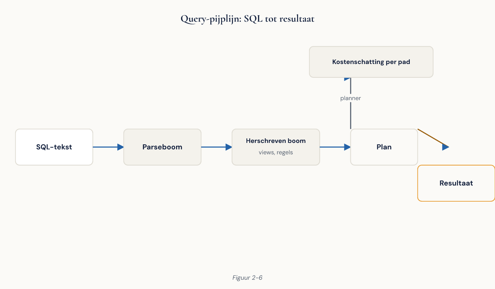

Cursus Databasemanagement · Niveau 1 (EDB Associate) · Deel 2 van 30
Het relationele model en de PostgreSQL-architectuur.
Met de platformkeuze uit deel 1 op zak gaat dit deel van theorie naar machine. U leert het relationele model van Codd, hoe sleutels en integriteitsregels de kern van elk ontwerp vormen, en hoe PostgreSQL dat model onder de motorkap uitvoert: processen, geheugen, write-ahead log en MVCC. Dit is inhoudelijk het zwaarste deel van niveau 1 — de architectuur die u hier leert, is de basis voor alles wat vanaf deel 3 volgt.
9secties
±2,5uleestijd + werkboek
4controlevragen
4fasen in de query-pijplijn
Positionering. Deze cursus is een voorbereiding op de EDB PostgreSQL Associate-certificering en uitdrukkelijk geen vervanging van het officiële examenmateriaal van EnterpriseDB (EDB) — raadpleeg altijd de actuele examenblauwdruk van EDB. PostgreSQL-versiedetails en klikpaden staan in de Toolbijlage, niet hier, zodat de reader bruikbaar blijft als versies opschuiven.
Niveau 1: ➊ Databases en het DBMS-landschap: waarom PostgreSQL → ➋ Het relationele model en de PostgreSQL-architectuur (hier) → ➌ SQL basis: SELECT, filteren, sorteren, aggregeren → ➍ SQL verdieping: joins, subquery's en CTE's → ➎ Datamodellering en normalisatie → ➏ DDL, datatypen en constraints → ➐ Transacties, ACID en MVCC → ➑ Indexen en views → ➒ Rollen, rechten en security → ➓ Capstone: de Meridiaan-datalaag
01
Waar dit deel over gaat
⏱ 8 min
Dit is inhoudelijk het zwaarste deel van niveau 1. Het examen weegt architectuur zwaar, en alles wat u in latere delen leert over indexen, tuning, back-up en replicatie veronderstelt het model uit dit deel.
Na dit deel kunt u:
de begrippen relatie, tupel, attribuut en domein correct gebruiken en koppelen aan hun SQL-tegenhangers;
de soorten sleutels onderscheiden en een sleutelkeuze motiveren;
de drie integriteitsregels benoemen en per regel aangeven wat er misgaat als u hem loslaat;
uitleggen waarom NULL = NULL niet waar is en welke gevolgen dat heeft voor uw query's;
de belangrijkste PostgreSQL-processen benoemen en zeggen wat elk doet;
het onderscheid cluster / database / schema toepassen bij het inrichten van een omgeving;
de reis van een query door parser, rewriter, planner en executor beschrijven;
uitleggen waarom WAL bestaat en wat er zonder WAL misgaat bij een crash;
verklaren waarom PostgreSQL-verbindingen duur zijn en wanneer pooling nodig is.
02
Waarom een model vóór een product
⏱ 10 min
Het relationele model is in 1970 beschreven door Edgar F. Codd in een artikel van dertien pagina's. Het is opmerkelijk dat een model uit 1970 nog steeds de basis vormt van vrijwel alle administratieve systemen ter wereld. De reden is dat Codd geen product beschreef maar een wiskundige basis: relaties als verzamelingen, met bewerkingen die gesloten zijn — het resultaat van een bewerking op relaties is zelf weer een relatie.
Die geslotenheid is de reden dat u in SQL een query op het resultaat van een query kunt loslaten, en dat een optimalisator een query mag herschrijven zolang het resultaat gelijk blijft. Zonder wiskundige basis was query-optimalisatie (deel 8, en niveau 2) onmogelijk geweest.
Praktisch belang
Als u het model kent, herkent u wanneer een product ervan afwijkt. Dat gebeurt vaker dan u denkt, en het is meestal precies daar waar de verrassingen zitten.
03
Het relationele model: bouwstenen en sleutels
⏱ 22 min
Model
SQL
Alledaags
Relatie
Tabel
Verzameling gelijksoortige gegevens
Tupel
Rij
Eén exemplaar
Attribuut
Kolom
Eigenschap
Domein
Datatype (+ constraints)
De toegestane waarden
Cardinaliteit
Aantal rijen
—
Graad
Aantal kolommen
—
Twee eigenschappen van een relatie die SQL niet naleeft, maar die u moet kennen:
Een relatie is een verzameling. Dubbele tupels bestaan niet, en er is geen volgorde. In SQL kan een tabel wél dubbele rijen bevatten (tenzij u dat verbiedt) en heeft een resultaat wél een volgorde zodra u ORDER BY gebruikt.
Attributen zijn atomair. Eén waarde per cel, niet een lijstje. PostgreSQL biedt arrays en jsonb en schendt hiermee bewust de eerste normaalvorm — soms terecht, vaak niet. Deel 5 gaat over wanneer wel en wanneer niet.
Het domein
Het domein wordt onderschat. varchar(200) is een zwak domein: het staat "Nvt", "onbekend" en "zie mail Karin" toe. Een sterk domein is een datatype plus constraints plus, waar mogelijk, een referentie naar een tabel met toegestane waarden.
Bij Meridiaan is burgerlijke_staat in de oude Access-schil een vrij tekstveld. Er staan negen varianten van "gehuwd" in. Dat is geen datakwaliteitsprobleem dat u met een schoonmaakactie oplost; het is een domeinprobleem dat u met een ontwerpbeslissing oplost.
Figuur 2-1 — Relatie, tupel, attribuut en domein op één voorbeeldtabel deelnemer
Sleutels
Supersleutel — elke verzameling attributen die een tupel uniek identificeert. Meestal zijn er veel, en de meeste zijn nutteloos ("bsn + achternaam + postcode"). Kandidaatsleutel — een supersleutel waaruit u geen attribuut kunt weglaten zonder de uniciteit te verliezen. Primaire sleutel — de kandidaatsleutel die u kiest als officiële identificatie, één per tabel, mag nooit NULL zijn. Alternatieve sleutel — de kandidaatsleutels die u niet koos; die verdienen alsnog een UNIQUE-constraint. Vreemde sleutel (foreign key) — een attribuut dat verwijst naar de primaire sleutel van een andere (of dezelfde) tabel. Samengestelde sleutel — een sleutel die uit meerdere attributen bestaat.
Natuurlijk of surrogaat?
De keuze die in elk project terugkomt. Een natuurlijke sleutel komt uit het domein zelf: burgerservicenummer, KvK-nummer, ISBN. Een surrogaatsleutel is betekenisloos en door het systeem gegenereerd: een volgnummer of een UUID.
Natuurlijk
Surrogaat
Betekenisvol voor mensen
Ja
Nee
Stabiel over de tijd
Vaak niet
Altijd
Bruikbaar bij ontbreken
Nee (buitenlandse deelnemer zonder BSN)
Ja
Privacygevoelig
Vaak
Nee
Extra join nodig om te herkennen
Nee
Ja
Voor Meridiaan is dit geen theoretische kwestie. Het burgerservicenummer lijkt de perfecte sleutel voor deelnemer, maar niet elke deelnemer heeft er een (grensarbeiders, gepensioneerden in het buitenland), het is een bijzonder persoonsgegeven dat zich via foreign keys door het hele model verspreidt, en het kan in uitzonderingsgevallen wijzigen.
Advies dat in deze cursus consequent wordt aangehouden
Gebruik een surrogaatsleutel als primaire sleutel, en leg de natuurlijke sleutel vast als UNIQUE-constraint waar hij bestaat en werkelijk uniek is. Zo krijgt u stabiliteit én bewaakte betekenis. In deel 5 en 6 werken we dit uit.
Controlevraag
Uit Werkboek deel 2, Opdracht 2.2 — Sleutelkeuze verdedigen
1Tarik (enterprise-architect) stelt voor om overal het burgerservicenummer als primaire sleutel te gebruiken: "Dan hebben we tenminste geen betekenisloze nummers en kunnen we systemen makkelijk koppelen." Geef een reactie met minstens drie argumenten, waarvan minstens één over privacy, en sluit af met een concreet alternatief.Toon antwoord
Het koppelvoordeel is echt, maar de kosten wegen niet op. Ten eerste: niet elke deelnemer heeft een BSN — grensarbeiders en deelnemers in het buitenland kunnen dan niet worden vastgelegd, terwijl entiteitsintegriteit eist dat een primaire sleutel nooit NULL is. Ten tweede: het BSN is een bijzonder identificerend gegeven; als primaire sleutel verspreidt het zich via elke foreign key door het hele model, tot in tabellen waar niemand het nodig heeft — dataminimalisatie wordt dan onhaalbaar. Ten derde: het kan in uitzonderingsgevallen wijzigen, en dan moet elke verwijzing mee. Voorstel: deelnemer_id als surrogaatsleutel, en het BSN als UNIQUE-kolom in de deelnemertabel, waar het één keer staat en gericht geautoriseerd kan worden.
04
De drie integriteitsregels
⏱ 15 min
Entiteitsintegriteit. Geen enkel attribuut van de primaire sleutel mag NULL zijn. Logisch: een identificatie die "onbekend" kan zijn, identificeert niet.
Referentiële integriteit. Een vreemde sleutel verwijst naar een bestaande rij, of is volledig NULL. Dit is de regel die het SharePoint-probleem uit deel 1 (mutatie op niet-bestaand werkgeversnummer 8842) onmogelijk maakt.
Bij referentiële integriteit hoort een gedragskeuze bij verwijderen of wijzigen van de verwezen rij:
Optie
Betekenis
Wanneer
NO ACTION / RESTRICT
Weiger de bewerking
Standaard en meestal juist
CASCADE
Verwijder/wijzig mee
Alleen bij echte eigendomsrelaties
SET NULL
Zet verwijzing op NULL
Als de relatie optioneel is
SET DEFAULT
Zet op standaardwaarde
Zelden
CASCADE op een deelnemertabel is levensgevaarlijk
Eén verwijderde deelnemer neemt zijn hele aansprakenhistorie mee. Gebruik CASCADE alleen waar het kind zonder de ouder werkelijk geen bestaansrecht heeft.
Domeinintegriteit. Elke waarde valt binnen het domein van het attribuut. In PostgreSQL: datatypen, CHECK-constraints, NOT NULL, en eigen domeinen (CREATE DOMAIN).
Controlevraag
Uit Werkboek deel 2, Opdracht 2.3 — Referentiële integriteit en verwijdergedrag
1Meridiaan krijgt drie tabellen: werkgever, deelnemer en aanspraak (een aanspraak hoort bij precies één deelnemer). Wat is er mis met de gedachte "we zetten overal CASCADE, dan hebben we nooit foutmeldingen"?Toon antwoord
Twee dingen. Ten eerste verandert CASCADE foutmeldingen niet in correct gedrag, maar in stille gegevensvernietiging: één verwijderde werkgever kan de hele keten van deelnemers en aanspraken meenemen zonder waarschuwing. Ten tweede is de foutmelding het doel — het systeem beschermt tegen een handeling die iemand niet had moeten doen. Voor een werkgever met 800 gekoppelde deelnemers hoort de verwijdering geweigerd te worden (RESTRICT); deelnemers zelf verwijdert men in de praktijk niet, maar beëindigt men met een status of einddatum. CASCADE hoort alleen thuis waar het kind zonder de ouder werkelijk geen bestaansrecht heeft.
05
NULL en de driewaardige logica
⏱ 15 min
NULL is niet nul, niet een lege string, en niet "leeg". NULL betekent onbekend of niet van toepassing. Daaruit volgt logica met drie waarden: waar, onwaar, onbekend.
Uitdrukking
Resultaat
NULL = NULL
onbekend, niet waar
NULL <> NULL
onbekend
NULL IS NULL
waar
5 > NULL
onbekend
Figuur 2-2 — Waarheidstabel driewaardige logica voor AND, OR, NOT
Gevolgen die in de praktijk fout gaan:
WHERE-clausules filteren onbekend weg.WHERE einddatum <> '2026-01-01' levert géén rijen op waar einddatum NULL is. Wie alle rijen wil behalve die ene datum, schrijft WHERE einddatum IS DISTINCT FROM DATE '2026-01-01'.
Aggregaties negeren NULL.AVG(premie) rekent over de niet-NULL waarden. COUNT(premie) telt alleen niet-NULL; COUNT(*) telt alle rijen. Dat verschil verklaart de meeste "de aantallen kloppen niet"-meldingen.
NOT IN met NULL in de lijst levert nooit rijen op. Berucht. Gebruik NOT EXISTS.
UNIQUE staat meerdere NULL's toe. Twee rijen met NULL in dezelfde unieke kolom zijn toegestaan, want ze zijn niet aantoonbaar gelijk.
Ontwerpregel: gebruik NULL alleen als "onbekend of niet van toepassing" werkelijk een geldige toestand is. Gebruik het nooit als vervanging voor een status. Een einddatum die NULL is omdat het dienstverband loopt, is verdedigbaar; een bedrag dat NULL is omdat de berekening nog moet draaien, is een verkapte statuskolom.
Controlevraag
Uit Werkboek deel 2, Opdracht 2.4 — NULL-vallen
1Bij Meridiaan blijkt een maandrapport 340.000 deelnemers te tellen terwijl een tweede rapport op 338.412 uitkomt. Beide gebruiken COUNT. Wat is de meest waarschijnlijke oorzaak, en welk patroon uit deze sectie herkent u erin?Toon antwoord
Vrijwel zeker gebruikt het ene rapport COUNT(*) en het andere COUNT(kolom) op een kolom met NULL-waarden — of er zit een WHERE-voorwaarde in die met <> of NOT IN werkt en daardoor NULL-rijen stil wegfiltert. Vuistregel: gebruik NOT EXISTS in plaats van NOT IN zodra NULL mogelijk is, en wees expliciet over COUNT(*) versus COUNT(kolom). Dit is exact het "drie afdelingen, drie aantallen"-probleem uit deel 1, nu met een technische oorzaak.
06
Relationele algebra en waar SQL afwijkt
⏱ 12 min
U hoeft geen algebra te kunnen schrijven, maar u moet de operatoren herkennen — de queryplannen die u in deel 8 en in niveau 2 gaat lezen, zijn er letterlijk in opgesteld.
Operator
Betekenis
SQL
Selectie (σ)
Rijen kiezen
WHERE
Projectie (π)
Kolommen kiezen
SELECT-lijst
Vereniging (∪)
Rijen samenvoegen
UNION
Doorsnede (∩)
Gemeenschappelijke rijen
INTERSECT
Verschil (−)
Rijen die niet in de tweede staan
EXCEPT
Cartesisch product (×)
Elke rij met elke rij
CROSS JOIN
Join (⋈)
Product plus voorwaarde
JOIN ... ON
Hernoeming (ρ)
Alias
AS
Onthoud vooral: een join is een cartesisch product met een filter. Wie dat begrijpt, begrijpt onmiddellijk waarom een vergeten joinvoorwaarde 340.000 × 4.100 rijen oplevert en waarom de planner joins probeert om te zetten in iets goedkopers.
Waar SQL afwijkt van het model
Puristen ergeren zich hieraan; u moet het simpelweg weten omdat het uw query's beïnvloedt.
Bags in plaats van sets. SQL-tabellen en -resultaten kunnen duplicaten bevatten. Vandaar DISTINCT.
Volgorde bestaat. In het model niet, in SQL wel via ORDER BY — en zonder ORDER BY is de volgorde niet gegarandeerd, ook al lijkt hij stabiel. Vertrouw daar nooit op.
NULL. Het model in zijn zuivere vorm kent geen NULL; SQL koos voor NULL en de driewaardige logica.
Kolomvolgorde is betekenisvol.SELECT * levert kolommen in de volgorde van definitie; in het model heeft een relatie geen kolomvolgorde.
Hier gaan we van theorie naar machine. PostgreSQL gebruikt een procesmodel, geen threadmodel: elke clientverbinding krijgt een eigen besturingssysteemproces. Dat is een fundamentele ontwerpkeuze met zichtbare gevolgen (sectie 9).
Postmaster (de hoofdserver). Het eerste proces dat start. Luistert op de poort, accepteert verbindingen, start voor elke verbinding een backend, start en bewaakt de achtergrondprocessen, en herstart alles na een crash van een backend.
Backend. Eén per verbinding. Voert de query's van die ene client uit. Sterft als de verbinding sluit.
Achtergrondproces
Taak
Background writer
Schrijft "vuile" pagina's uit shared buffers geleidelijk naar schijf, zodat backends dat niet zelf hoeven
Checkpointer
Voert checkpoints uit: alle vuile pagina's naar schijf, zodat herstel na crash niet vanaf het begin van de WAL hoeft
WAL writer
Schrijft de WAL-buffers naar het WAL-bestand
Autovacuum launcher/workers
Ruimen dode rijversies op en verversen statistieken (essentieel — zie MVCC)
Archiver
Kopieert volle WAL-segmenten naar de archieflocatie (nodig voor PITR, niveau 2)
Logger
Schrijft de serverlog
Statistics collector
Verzamelt gebruiksstatistieken voor de planner en voor monitoring
WAL sender / receiver
Alleen bij replicatie (niveau 2)
Figuur 2-3 — Procesdiagram — postmaster, backends, achtergrondprocessen, gedeeld geheugen
Waarom u dit moet kennen
Als in niveau 2 een productieprobleem zich manifesteert als "de schijf loopt vol", is het antwoord vrijwel altijd terug te voeren op één van deze processen dat zijn werk niet doet — meestal autovacuum of de archiver.
Geheugen: shared buffers en de rest
shared_buffers — de bufferpool: het gedeelte van het RAM waarin PostgreSQL datapagina's vasthoudt (gedeeld door alle processen). Elke lees- of schrijfbewerking gaat hierdoorheen; een pagina is standaard 8 kB. WAL buffers — waar WAL-records verzamelen voordat ze naar schijf gaan.
Belangrijk en contra-intuïtief
PostgreSQL vertrouwt bewust ook op de cache van het besturingssysteem. Het zet shared_buffers daarom niet op 90% van het geheugen, zoals sommige andere DBMS'en doen. De vuistregel (25% van het RAM, met nuances) komt in niveau 2.
Lokaal, per backend: work_mem — per sorteer- of hash-bewerking. Te laag: de sortering gaat naar schijf en de query wordt traag. Te hoog: bij veel gelijktijdige query's raakt het geheugen op, want dit geldt per bewerking, per verbinding — de meest verkeerd ingestelde parameter in PostgreSQL. Daarnaast maintenance_work_mem (voor VACUUM, CREATE INDEX) en temp_buffers (tijdelijke tabellen).
Dit onderscheid is een klassieke examenvraag én een klassieke bron van verwarring in projecten. Cluster — één draaiende PostgreSQL-installatie op één datadirectory, met één postmaster en één poort, bevat meerdere databases. Let op: "cluster" betekent hier dus niet "meerdere machines".Database — een geïsoleerde verzameling schema's; een verbinding maakt verbinding met precies één database. Schema — een naamruimte binnen een database, bevat tabellen, views, functies, typen; standaard bestaat public. Tabel — waar de gegevens werkelijk staan.
Vraag uit de casus: moeten de nieuwe deelnemersgegevens en werkgeversgegevens in dezelfde database? Zelfde database, verschillende schema's → u kunt joinen, één back-up, één transactie over beide; rechten scheidt u op schemaniveau. Verschillende databases → harde scheiding, maar geen joins en geen transactie over beide heen. Vuistregel: scheid met schema's tenzij u een harde isolatie-eis heeft.
Map/bestand
Inhoud
base/
De databases; per database een submap, per tabel een of meer bestanden
global/
Objecten die voor het hele cluster gelden (o.a. de rollenlijst)
pg_wal/
De write-ahead log-segmenten
pg_tblspc/
Verwijzingen naar tablespaces buiten het datadirectory
postgresql.conf
Hoofdconfiguratie
pg_hba.conf
Wie mag van waar op welke manier verbinden
Waarschuwing
Verwijder nooit met de hand bestanden uit base/ of pg_wal/. Een volgelopen pg_wal/ is een symptoom (meestal een gefaalde archiver of een vergeten replicatieslot); handmatig opruimen maakt de database onherstelbaar.
De systeemcatalogus
PostgreSQL beschrijft zichzelf in gewone tabellen: pg_catalog (o.a. pg_class, pg_attribute, pg_namespace, pg_type, pg_roles), information_schema (draagbare, gestandaardiseerde view), en pg_stat_*-views (actueel gedrag, zoals pg_stat_activity — het eerste wat u opent bij "de database is traag").
WAL: de belofte van duurzaamheid
De write-ahead log is het mechanisme achter de D van ACID, en tevens de basis van back-up en replicatie (niveau 2). Vóór een wijziging naar het eigenlijke gegevensbestand gaat, wordt hij als record naar de WAL geschreven en daar afgedwongen naar schijf (fsync). Pas dan bevestigt de database de commit. Bij een crash leest PostgreSQL de WAL vanaf het laatste checkpoint en speelt de wijzigingen opnieuw af: wat gecommit was, komt terug; wat niet gecommit was, verdwijnt. Het is bovendien sneller, omdat WAL-schrijfacties sequentieel zijn terwijl het bijwerken van gegevensbestanden willekeurig verspreid is.
Figuur 2-5 — WAL-stroom — wijziging → WAL-buffer → WAL-bestand (fsync) → commit bevestigd → later pas gegevensbestand
MVCC in één alinea
Multiversion Concurrency Control is de manier waarop PostgreSQL gelijktijdigheid regelt (volledig in deel 7). Een UPDATE wijzigt de bestaande rij niet; er wordt een nieuwe versie geschreven, de oude blijft staan. Gevolg: lezers blokkeren geen schrijvers, en schrijvers blokkeren geen lezers. De prijs: dode rijversies blijven op schijf staan, en VACUUM ruimt ze op — daarom draait autovacuum permanent op de achtergrond. Zet iemand autovacuum uit "omdat het I/O kost", dan groeit de tabel onbeperkt (table bloat): de bekendste manier om een PostgreSQL-productieomgeving te slopen.
09
De reis van een query, en aansluiting op de certificering
⏱ 18 min
Vier fasen, en elke fase heeft een deel in deze cursus. 1. Parser. Controleert de syntaxis en bouwt een parseboom; onbekende kolomnaam of ontbrekende komma gaat hier mis. 2. Analyzer/rewriter. Zoekt de genoemde objecten op in de catalogus, controleert typen en rechten, en herschrijft de query waar nodig. 3. Planner/optimizer. Bepaalt hoe de vraag beantwoord wordt: welke index, welke joinvolgorde, welk joinalgoritme, sequentiële scan of indexscan — op basis van statistieken die door autovacuum/ANALYZE worden bijgehouden. 4. Executor. Voert het plan uit, haalt pagina's op via shared buffers, en levert rijen terug aan de client.

Figuur 2-6 — Query-pijplijn — SQL → parseboom → herschreven boom → plan → resultaat, met per fase het cursusdeel
Het belangrijkste inzicht van dit deel
SQL is declaratief. U beschrijft welk resultaat u wilt, niet hoe het opgehaald moet worden. Het "hoe" bepaalt de planner. Daarom kan dezelfde query vandaag snel en morgen traag zijn — en daarom leert u in deze cursus niet alleen SQL schrijven, maar ook plannen lezen.
Verbindingen en waarom pooling bestaat
Elke verbinding is een besturingssysteemproces, met eigen geheugen en opstartkosten. Gevolgen: verbindingen zijn duur (een applicatie die per verzoek een nieuwe verbinding opent, verspilt meer tijd aan verbinden dan aan de query), veel verbindingen schalen slecht, en work_mem vermenigvuldigt over gelijktijdig actieve backends. Daarom bestaat connection pooling: een tussenlaag houdt een beperkt aantal verbindingen open en deelt die tussen veel clients — op infrastructuurniveau is PgBouncer de standaard (volledig in niveau 2).
Wat het examen hierover vraagt
Architectuur is een zwaarwegend domein in de EDB Associate-certificering. Wat u paraat moet hebben: de rol van postmaster, backend, background writer, checkpointer, WAL writer en autovacuum; het doel van shared buffers versus work_mem; het onderscheid cluster/database/schema; de inhoud van het datadirectory op hoofdlijnen; waarom WAL bestaat en hoe crashherstel verloopt; de vier fasen van queryverwerking; en het principe van MVCC.
Kernbegrippen
Relatie/tupel/attribuut/domein — model-termen voor tabel, rij, kolom, toegestane waarden. Kandidaatsleutel — minimale unieke identificatie. Surrogaatsleutel — betekenisloze, door het systeem gegenereerde sleutel. Referentiële integriteit — vreemde sleutels verwijzen naar bestaande rijen. Driewaardige logica — waar, onwaar, onbekend. Cluster — één PostgreSQL-instantie op één datadirectory. Schema — naamruimte binnen een database. Shared buffers — gedeelde bufferpool voor datapagina's. WAL — write-ahead log. Checkpoint — moment waarop vuile pagina's naar de gegevensbestanden gaan. MVCC — meerdere rijversies naast elkaar voor gelijktijdigheid zonder blokkeren. Bloat — ruimte ingenomen door niet-opgeruimde dode rijversies. Connection pooling — hergebruik van een beperkt aantal verbindingen.
Terug naar de casus. Met dit model en deze architectuur op zak kunt u het ontwerp van de nieuwe datalaag onderbouwen: een surrogaatsleutel per kerntabel, het BSN als bewaakte maar niet leidende kolom, schema's binnen één database voor deelnemer en werkgever, en een expliciete keuze voor WAL-gebaseerde duurzaamheid — precies wat Programma Open Pensioen nodig heeft om niet in dezelfde valkuilen te lopen als de oude schil.
Vooruit naar deel 3. U schrijft in deel 3 uw eerste query's tegen de Meridiaan-database — en u zult merken dat u nu al kunt uitleggen waarom sommige daarvan traag zijn.
Controlevragen
Uit Werkboek deel 2, Opdracht 2.7 en 2.8 — WAL uitleggen, en de reis van een query
1Ruud (beheerhoofd) vraagt: "Als de stroom uitvalt precies op het moment dat er honderd mutaties bezig zijn, wat is er dan kwijt?" Geef een antwoord dat benoemt wat er met bevestigde en onbevestigde transacties gebeurt, waarom de aanpak ook sneller is, en wat Meridiaan zelf moet regelen.Toon antwoord
Er gaat niets kwijt dat bevestigd is. Voordat een wijziging in de gegevensbestanden terechtkomt, schrijft PostgreSQL hem eerst als logrecord weg en dwingt af dat het record fysiek op schijf staat; pas daarna volgt de bevestiging. Valt de stroom uit, dan leest de database bij het opstarten dat logboek terug vanaf het laatste checkpoint: alles wat bevestigd was, wordt opnieuw toegepast; alles wat nog liep, verdwijnt volledig — halve mutaties bestaan niet. Het is bovendien sneller omdat het logboek sequentieel wordt weggeschreven, terwijl het bijwerken van de gegevensbestanden verspreid over de schijf gebeurt en rustig mag volgen. Wat Meridiaan zelf moet regelen: schijven en controllers die een schrijfbevestiging niet mogen "liegen" — anders is de belofte waardeloos.
2Een query levert het juiste antwoord, maar duurt sinds vorige week 40 seconden in plaats van 0,2 seconde, zonder dat de query, de data of de hardware is gewijzigd. In welke fase van de query-pijplijn zit de verklaring, en waarom kan dit gebeuren?Toon antwoord
De verklaring zit in de planner, niet in de query zelf. De planner kiest zijn plan op basis van statistieken over de gegevensverdeling. Als die statistieken verouderd zijn — bijvoorbeeld doordat autovacuum achterloopt terwijl de tabel sterk is gegroeid — schat hij de kosten verkeerd in en kiest hij bijvoorbeeld een sequentiële scan waar een indexscan beter was: dezelfde query, dezelfde data, een ander plan. Gereedschap om dit te onderzoeken: EXPLAIN en EXPLAIN ANALYZE (deel 8). Dit verbindt autovacuum rechtstreeks met de planner.
Verder naar deel 3
Deel 3 zet het model en de architectuur uit dit deel om in praktijk: uw eerste query's tegen de Meridiaan-database, met SELECT, filteren, sorteren en aggregeren.